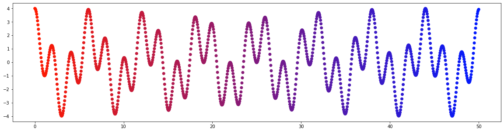
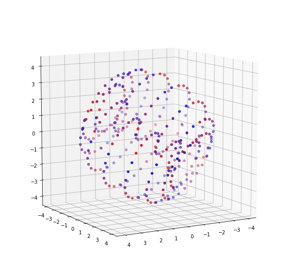

Math Butler
Personal, March 2023
As a passionate math student, I realized that there wasn't a single resource that collected all the opportunities and resources for math students in one place. That's why I decided to create MathButler - a website designed to serve both undergraduate and graduate students in mathematics. To create the site, I hand-coded the HTML, CSS, and Javascript, which gave me the freedom to design it exactly the way I envisioned it. I also used a Linode Server and Pocketbase to host the site and its backend. This allowed me to store data and information in a secure and efficient way, while also ensuring that the site was fast and reliable for users. MathButler has been an exciting and fulfilling project, and I'm proud to say that it's become a valuable resource for the math community. It's amazing how coding and technology can be used to help others, and I'm looking forward to exploring more opportunities to create and innovate in the future.
Markovian Music
Florida International University, Apr 2022
Recently, I had some fun with music and programming by using Python to create a custom musical piece. I employed the use of Markov chains to determine the distribution of musical notes. This method allowed me to create a unique and randomized piece of music. To take it to the next level, I hand modeled a piano in numpy to ensure that the notes didn't sound terrible together. The result was an original and enjoyable tune that perfectly blended my love of music and programming. Python is truly a versatile language!
Building my own Ortholinear Keyboard with QMK and AHK
Personal, December 2021
I had a scare with some carpal tunnel and I decided to work making my time at the computer more healthy for my hands and wrists. I also set out to make an ortholinear keyboard on a budget. So for around $60 with some spare parts, I got a PCB, switches and keycaps. It has served me well but isn't yet in its final form. The board has since been reduced to a much smaller 4X12 arrangement, much like the planc. I find that remapping the numbers to the homerow and swapping to colemak makes the keyboard an absolute blast to use.

Using winget/shell to replace ninite with batch
Personal, Jan 2022
I am huge fan of doing system resets. I usually find that I have a slow build up of cluttered applications and weird downloads that end up cluttering my system to a level that I deem intrusive. Now the old words of wisdom was to wipe your PC and then use a tool like Ninite but I have fallen out of favor with Ninite because it just does not cover enough weird things that I often use.
Visual Aid Development using Tikz
Illustrative Mathematics, Apr 2018 - Dec 2020
The largest task that I was assigned at my time at Illustrative Mathematics (IM) was creation of visual aids for the IM curriculum. Over my two and a half years at the company, I made over 10,000 unique images to compliment the material. I ended up being image lead for the elementary expansion and used my knowledge of tikz and pgf to redesign our materials to best suit the young audience. After a lot of feedback from my peers, we were able to find designs that best complimented the growth of the students from kindergarten through fifth grade. As I was transitioning towards graduate school, I built a framework of custom classes and packages that would optimize the production of the images and wrote extensive guide books to help the company keep working on their tasks. These images that I was able to make and maintain over the two years I was there contained millions of lines of code. I value my time at IM for many reasons, one of the big ones was opportunity to contribute so integrally to these projects. I felt that this job is what forced me to approach the areas of programming that I had been avoiding. Because of that, I know I am a much better programmer today than I was just a short while ago.
Since the material is still in active use and all images and materials are (perhaps not legally, but ethically) owned by IM. Besides, there would be a lot of graphs and it would be a very boring viewing experience. Please use the image provided to get the vibe.

Homebrew solution to weekly updates
Personal, On Going
Google Scripts is a hell of a drug. Due to the ease at which google scripts and google sheets integrate together, you can make some very simple but powerful weekly notifications. As in every household, we have to do chores and make food. Because the chores are not infinitely divisible, we often find that one person would get stuck with a worse set of chores when we delegated them out. We recognized that having human interactions can cause bias, so we turned to google sheets. Now once a week, every week, we get a chore list emailed to us. No extra apps or weird services. We later upgraded this service to include a daily meal plan with a corresponding shopping list for the previous week to make sure that we could adhere to our meals. We also later added stock updates and important calendar notifications in these emails all controlled by google sheets and sent out through Google Scripts. It is truly amazing and I recommend it to everyone.
Father's Day Messages using N-Grams
Personal July 2021
Viewable on other site.So when I was in undergrad I worked on a project that used Python dictionaries and n-grams to predictively generate messages based an original corpus. I then turned this towards some nefarious activities. Since then it's laid dormant but I thought it would be interesting to include a version for Father's Day. I thought "wouldn't it be funny to randomly generate a bunch of Father's Day messages using a very low depth to get some absolutely bizarre results?" I'll let you be the judge of that. Here is 5000 computer generated Father's Day messages based off an initial sample of just 600 messages scrapped off the internet.
Laser Cutting Puzzles for a Math Award
University of Michigan -- Flint, Feb 2018
This was a super fun project. I originally told my undergraduate institution that buying gifts was not as sincere and instead we could make cooler prizes for a fraction of the cost. When they challenged, I optimistically agreed to make the prize puzzles. I planned it all out, got the puzzles under $15 a piece, made a design that was kid friendly (perhaps a little pokey), and ordered the supplied. After purchasing the over $100 dollars of raw materials, I found out that my university was still in the process of acquiring a laser cutter. This was a big goof in my plan.In an absolutely lucky turn of events, I was attending JMM Atlanta and was walking through the booths and stumbled upon Cherry Arbor Designs. They are a smaller lazy cutting business that makes some very nice math puzzles. When I asked if they could lend me a hand with the laser cutting, they whole heartedly agreed and gave me his business card to have me ship the pieces to his workshop for cutting. After receiving his business card I realized that said workshop was a stones throw from my house and he was an alumni to a sister University. As a thank-you for making these all possible, I made sure to include a 3D printed token of their logo. If you find their booths at a craft show, be sure to check them out! On the whole, I walked away from this project having made some awkward comments, messed up one of the eight puzzles, ended up having to resort to option D for puzzle wrappers, and walked away with all my efforts without pay... but it was a eye opening experience that brought me into the world of laser cutting.

Expansion Sim
Personal, April 2019
I worked on a fascinating project using Python to model expansion simulations with Monte Carlo Markov Chains. The simulation involved generating large amounts of data, which was processed using MCMC algorithms. These simulations required careful coding to ensure their accuracy, but I found the challenge both interesting and rewarding. To accompany the simulations, I used the Python Imaging Library (Pillow) to create stunning visuals. The visualizations added another layer of depth to the project and made it easier to see how the simulations were working. By using Monte Carlo Markov Chains, I was able to accurately model the expansion and create engaging visuals that truly brought the simulation to life. I am excited to explore more of Python's capabilities in the future and see what other innovative projects I can create.
Exam Generator
Florida International University, Apr 2022
As a devoted math student, I know that practice makes perfect. So, to really nail down my skills, I decided to get creative and use python, sage, and LaTeX to craft my own practice exams with solutions. With python, I could generate a variety of randomized questions, while sage allowed me to do the calculations, and LaTeX made everything look polished and professional. This personalized approach to studying helped me hone my skills in a more efficient and effective way. Plus, when it came time for my qualifying exams, I was able to prepare like a boss thanks to all that practice. So, if you're looking for a fun way to take your math skills to the next level, give python, sage, and LaTeX a shot - your grades will thank you!
Topological Data Analysis
Florida International University, Apr 2022
As the resident programmer, I was asked to come to the REU in 2021 to assist where I can. One such project was assisting in the coding of the Topological Data Analytics. My role with the project was short lived. I assisted with the understanding of the initial package, gave some code snippets on occasion, then helped make a nice visual at the end. Python did a lot of the heavy lifting and the students on the project were pretty sharp so my role was to give insight and make visual.
 